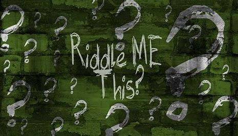

Home
About Me
Education
Contact
About Me
Hi My name is Shaan Hussain. I am currently in the All Star Code Brotherhood and it has been an amazing journey and I have learnt alot. Some of my hobbies would be doing some coding on the side and watching anime. One other thing about me is that I am a Muslim.
Education
I am currently enrolled in Thomas A. Edison Career and Technical Education. I am in the Electrical engineering program, which I dont like, but at least I got into All Star Code which made my interest CS stronger and makes me want to delve deeper into the world of programming. For college I want to go to either Syracuse or NYIT. I think these schools will help increase my knowledge in CS and prepare me for professional programming jobs.
Contact
hussainshaan543@gmail.com
Place to watch Anime --->
Crunchyroll.com
Riddle
“I am… ‘A house without the head of head, knitted deep within the trees. A head that lies without its eyes, stitched silently to tearse.’ What am I?” Let me know if you figure it out
